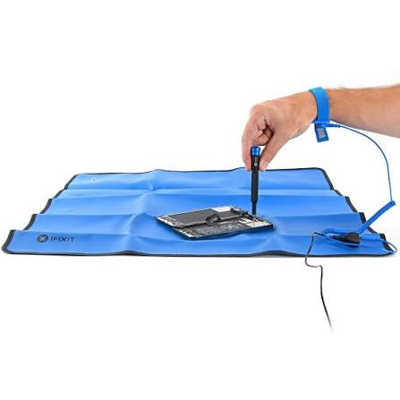
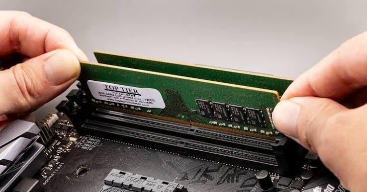
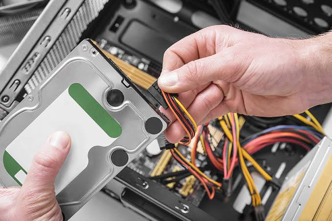
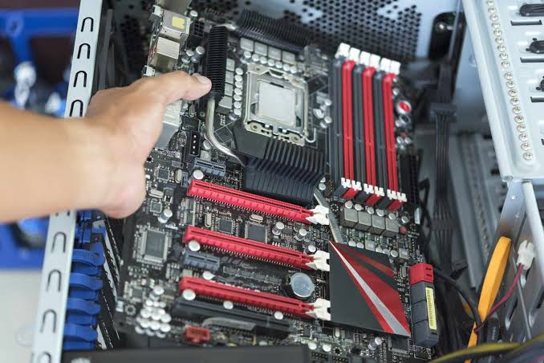
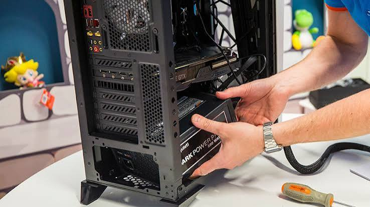
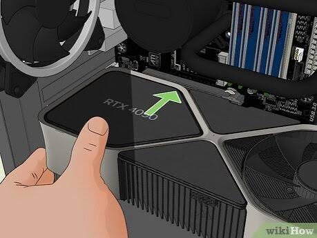
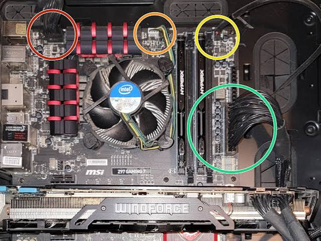
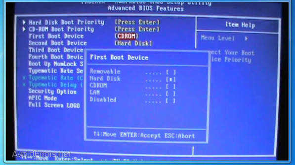

How to Build a PC
Building a computer may seem complicated at first, but the process becomes easier when it is divided into individual steps.
Always read the instructions included with your specific components before installing them.
Step 1: Prepare Your Workspace
Find a clean and organized workspace with enough room for your case, components, and tools. Keep food and drinks away from your computer parts.

Step 2: Install the CPU
Locate the CPU socket on the motherboard. Carefully align the CPU with the socket and place it into position.
Avoid touching the contacts or using unnecessary force.

Step 3: Install the RAM
Locate the RAM slots on the motherboard. Open the locking tabs, align the RAM module with the slot, and press it into place until it is properly secured.

Step 4: Install the Storage
Install your SSD or other storage device according to the instructions for your motherboard or case.
Some SSDs connect directly to the motherboard while others are installed in a drive bay.

Step 5: Install the Motherboard
Carefully place the motherboard inside the computer case. Align the motherboard with the mounting points and secure it using the correct screws.

Step 6: Install the Power Supply
Place the power supply into the correct location inside the case and secure it.
The power supply will connect to the motherboard, graphics card, storage devices, and other components.

Step 7: Install the Graphics Card
Insert the graphics card into the correct expansion slot on the motherboard.
Secure it to the case and connect any required power cables.

Step 8: Connect the Cables
Connect the required power cables, case connections, fans, and storage cables.
Check your motherboard manual if you are unsure where a cable should connect.

Step 9: First Boot
Connect the computer to a monitor, keyboard, mouse, and power outlet. Turn on the computer and check that the system successfully starts.
After the computer is working, install your operating system and the required drivers.
